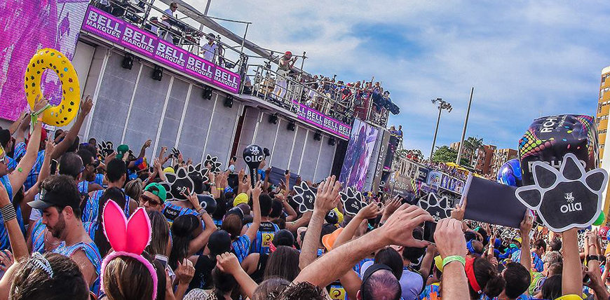

Se você acompanha o carnaval de Salvador sabe que um dos maiores blocos da nossa amada folia é o Bloco Camaleão. Sua passagem é um acontecimento que ninguém fica imune. É bem verdade que cada bloco tem a sua beleza particular, mas o desfile do Camaleão é incomparável. Provoca sensações difíceis de descrever. Impossível não se arrepiar, se emocionar! Sob o comando do ícone Bell Marques desde 2014, quando o cantor deixou a banda Chiclete com Banana, antiga atração do bloco, para seguir carreira solo, no desfile da famosa “patinha” não faltam hits de sucesso e milhares de foliões vindos de todos os cantos do Brasil e do mundo. 
História do Bloco
O Camaleão é o maior bloco da história do carnaval da Bahia. Fundado em 1979, o bloco foi batizado com esse nome pelo artista plástico Bel Borba, numa homenagem aos camaleões que povoavam a Praça da Piedade em Salvador. Grandes nomes da música baiana comandaram esse bloco. Luiz Caldas, no auge do Fricote, foi uma dessas estrelas. Desde 1989, o Bloco Camaleão passou a ser "puxado" pela banda Chiclete com Banana. Essa união gerou um dos maiores fenômenos no carnaval baiano. Uma verdadeira nação de chicleteiros, vindas de todos os cantos do Brasil, invadem as ruas com seus abadás multicores para curtir o som da banda e reverenciar a "patinha", símbolo do bloco criado pelo designer Pedrinho da Rocha. Considerado um dos blocos mais tradicionais da cidade, em fevereiro de 2019 o bloco recebeu como homenagem a inauguração de uma praça com seu nome, localizada no bairro de Ondina.